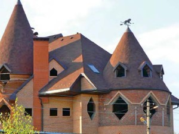
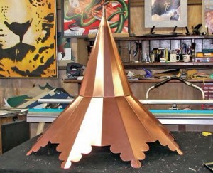

Коническая крыша
Конические крыши, даже если они всего лишь украшают козырек вашего дома, делают постройку более торжественной и немного сказочной. В средние века это был довольно распространенный прием устройства кровель, особенно когда речь шла о возведении замков или дворцов с башнями.
Стропильную конструкцию таких башенок выполняют, укладывая стропила веерным способом, в этом случае стропильные ноги расходятся веером из общего центра и образуют конусовидную форму. Поскольку для них необходимы опорные элементы – прогоны, то в качестве верхней опоры обычно выступает кольцевой прогон из клееной древесины, который закрепляется на центральном столбе таким образом, чтобы самая верхняя точка конуса башенки была не нагружена. Второй опорой выступает мауэрлат, который укладывается по стене башенки. Его делают либо таким же круговым, как и коньковый прогон, либо делят на сегменты, согласно количеству стропильных ног, формируя многоугольник. Конструкция потолочных балок должна быть рассчитана на сосредоточенную нагрузку в том месте, где будет установлен центральный столб. Кольцевой коньковый прогон крепится к центральному столбу с помощью раскосов.
Далее конструирование каркаса походит на изготовление колеса. Концы стропильных брусьев закрепляются на полукруге, причем не самой узкой своей частью, что обеспечивает необходимую прочность соединения.
Еще более прочной делают данную конструкцию небольшие угловые запилы на нижней плоскости стропильного бруса, выполненные в месте его соединения с мауэрлатом, а также металлические уголки, скрепляющие деревянные детали.
Количество стропильных ног, которые являются ребрами жесткости конической крыши, будет определяться сечением используемого материала и необходимым расстоянием между ними.
С нижней стороны крыши, в месте крепления стропил к опорному брусу по периметру полукруглой стены, расстояние между ними, наоборот, довольно велико, но это не очень хорошо, надо стремиться к тому, чтобы его уменьшить примерно на половину. Это необходимо сделать для того, чтобы обрешетка под укладку черепицы имела равномерный плавный изгиб. Добиться желаемого можно следующим образом: в нижней части стропильного конуса между основными брусьями укладывают вспомогательные, меньшего сечения, придающие поверхности плавную округлость и дополнительную прочность.
Теперь приступаем к монтажу водоотводного желоба. Отыскать в продаже полукруглый вариант, да еще и нужного вам диаметра, не получится, поэтому собирать подобную конструкцию придется самостоятельно. Сделать это можно из отдельных отрезков металлического желоба, которые вы скрепите между собой. Если выполнить соединения красиво, то ваш сборный желоб будет невозможно отличить от сплошного, в особенности издалека.
Пришло время заняться обрешеткой. Традиционный вариант, состоящий из деревянных брусков квадратного сечения, здесь не годится – уложить их с нужным изгибом будет не то что сложно, а попросту невозможно, вы их скорее сломаете, чем заставите принять нужную форму. Выходом из положения может стать использование гибких пластиковых брусков либо обычных водопроводных труб ?20–32 мм (синего цвета). Их несущей способности будет достаточно, чтобы выдержать вес кровли, а гибкость полимерного материала позволяет придать им дугообразную форму. Для дополнительной надежности пластиковые бруски или трубы уложите в два слоя, один выше другого, и прикрутите к стропилам саморезами.
Конусообразную кровлю можно покрывать фальцевым способом, уложить черепицу (керамическую или битумную), гонт, дранку или камыш.
Если вы выбрали черепицу, то опять придется прибегнуть к креативу. Ведь снизу вверх от ряда к ряду ширина черепичин должна уменьшаться, принимая слегка искривленную форму, соответствующую изгибу конической крыши. Не ломайте голову. Ответственные производители предусмотрели такой поворот событий и, как правило, включают в ряд выпускаемой продукции коническую черепицу. Просчитайте длину стропил, угол уклона и площадь кровли и купите необходимые кровельные элементы.
Далее действуйте традиционным способом – кладите элементы снизу вверх. Каждую последующую черепичину укладывайте внахлест на боковую и нижележащую.
В отличие от традиционной кровли с плоскими скатами черепичины от ряда к ряду уменьшаются по ширине, поэтому каждый последующий ряд состоит из все меньшего количества элементов, практически сходящих на нет в верхней точке кровли.
В местах примыкания кровли к поверхности наружной стены необходимо предусмотреть надежную гидроизоляцию. Для этого над линией соединения сплошной полосой проклеивают гидроизолирующую ленту.
Попытаемся обобщить вышесказанное и разложить все по полочкам:
- вынос скатов должен составлять примерно 30 см;
- поверх бетонного перекрытия укладывайте изогнутый брус-мауэрлат, к которому на небольшом расстоянии друг от друга закрепите стропила;
- концы стропил при необходимости заострите, чтобы плотнее сомкнуть их в верхней точке конической кровли;
- верхние концы стропил с угловыми запилами уложите на полукруглую опору и скрепите металлическими уголками. Вот как выглядит стропильная конструкция изнутри: стропила равномерно уложены на деревянный полукруг, закрепленный на вершине опорного столба;
- для обрешетки используют продольные бруски двух размеров: длинные, лежащие точно поверху стропил, и короткие, расположенные посередине межстропильных промежутков;
- рулонную гидроизоляцию уложите внахлест снизу вверх, разгладьте складки и проклейте стыки;
- перед укладкой черепицы закрепите водоотводный желоб, аккуратно спаянный из отдельных деталей (очень красиво выглядит подобный водоотвод из меди);
- держатели для желоба должны быть закреплены по центру стропил точно под спаянными стыками сегментов;
- расстояние между горизонтальными рейками обрешетки из пластика зависит от используемого кровельного материала;
- если вы работаете с черепицей, то для удобства каждый элемент конической черепицы должен быть маркирован клеймом с номером своего ряда;
- в каждом последующем ряду количество черепичин уменьшается.
Для укладки гибкой черепицы необходимо создать сплошное покрытие. Лучше это выполнить при помощи тонколистовой фанеры (3-5 мм), уложенной в несколько слоев. Не забудьте настелить пароизоляцияю, если планируете создать теплую кровлю.
Листы фанеры нарезаются в форме трапеции и укладываются снизу вверх. Последующие слои должны перекрывать соединения предыдущих. В общей сложности необходимо набрать толщину 10-12 мм. Далее слои укладываются стандартно – гидроизоляция и гибкая битумная черепица.
Самый верх конусной крыши обычно заканчивается металлическим коньком, который вам придется сделать на заказ. В качестве материала можно выбрать медь, оцинкованную сталь с покрытием или без такового или нержавеющую полированную сталь. Можно совместить (чаще всего именно так и поступают) изготовление конька с установкой флюгера.
Современные флюгеры украшают не только коньки больших коттеджей, но и гаражи, садовые домики, не редки они и в качестве украшения беседок. Такая конструкция добавит экзотики вашей башенке, будет очень даже кстати в этом месте.
В основном флюгеры делают из оцинкованной стали или из меди, медно-латунного сплава. Оцинкованные варианты дополнительно покрываются порошковой эмалью или специальной краской, устойчивой к механическим и ультрафиолетовым воздействиям.
Собираясь делать флюгер самостоятельно или заказывая его изготовление у специалистов, определитесь с размером. Это украшение должно быть соразмерным строению.
Вращающаяся часть флюгера может быть изготовлена разными способами: это может быть вращающаяся стойка, которая вставляется в стальную трубу, или наоборот – стойка статична, вращающийся же элемент закреплен на стальной трубе. Внутренние полости вращающихся элементов необходимо защитить колпачками. Не забудьте смазать подвижные элементы солидолом – это сбережет ваши нервы в ветреные ночи, а смазка обеспечит легкое вращение стрелки и защитит узел от коррозии.
Основание, на котором крепится флюгер, изготавливается из стального уголка или согнутого листа стали толщиной 2-3 мм. Такая конструкция позволит закрепить флюгер на коньке кровли.
Флажок-силуэт крепят сверху стрелки. Наилучший материал для изготовления флажка и литер, обозначающих стороны света, – листовая оцинкованная сталь толщиной 1–1,5 мм. Выпилить из нее силуэт можно обыкновенным электролобзиком. Кромку выпиленной фигуры обрабатывают напильником, удаляя заусенцы и сглаживая неровности. К стрелкам указателя литеры припаивают твердым припоем, например, латунью.
Флажок и литеры лучше окрасить в черную краску, как поступает большинство производителей, чтобы изделие было более заметным на светлом фоне неба.
Расчет длины и площади кровли, объем материалов
Коническая кровля смотрится довольно необычно. Но помимо необычности во внешнем виде, вам предстоит еще столкнуться с необычными расчетами количества материалов, которое понадобится на ее устройство. Для этого необходимо узнать длину ската и площадь кровельного покрытия.
Самое простое, что вам предстоит выяснить – диаметр основания кровли и ее высоту. Данные манипуляции несложно выполнить обыкновенной рулеткой. А вот дальше берите в руки карандаш, калькулятор – и приступаем к расчетам.
Будем исходить из того, что фигура, которую образует ваша будущая крыша – прямой конус, диаметр основания которого, к примеру, равен 6 м. Но вы хотите, чтобы кровля имела свесы по всей окружности. Обычно их выполняют длиной 20-30 см, тогда диаметр основания у нас увеличится на эту величину и составит, например, 6,5 м. Высота конуса – 5 м.
Какой длины будут стропильные ноги?
Для этого придется вспомнить теорему Пифагора, согласно которой длину ската можно представить суммой квадрата высоты конуса и квадрата половины диаметра. Ведь конус в разрезе выглядит как два прямоугольных треугольника, для которого «сумма квадратов катетов равна квадрату гипотенузы»: L2 = R2 + H2.
L2 = 3,252 + 52 = 35,5625 м.
Длина ската будет равна корню из 35,5625, то есть 5,96 м.
Как посчитать угол наклона крыши и величину ее площади?
Угол наклона крыши можно рассчитать, например, с помощью функций тангенса:
tg = H/R.
Для нашего примера:
tg = 5/3,25 = 1,54.
В соответствии с таблицами тангенсов угол наклона крыши а = 57°.
Размер площади конической крыши S рассчитывается по следующей формуле:
S = ? ? R ? L.
Для нашего примера площадь конической крыши составит:
S = 3,14?3,25?5,96 = 60,8 м2.
Следовательно, кровельного материала понадобится 60,8 м2 плюс необходимый запас в зависимости от применяемых материалов в 10-15%.


{kind=link}
{kind=link}
{kind=link}
{kind=link}